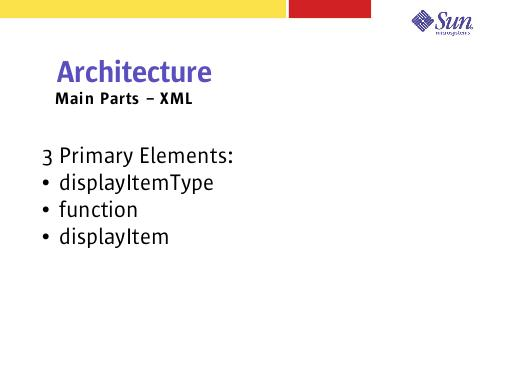

Notes:
The XML file(s) defines all the ViewBeans in the application. This includes the complete hierarchy of each ViewBean and all the events that need to be declared.
This file becomes the primary file of your application. It is used to create or modify ViewBeans, and delegate to Java code during the desired events.